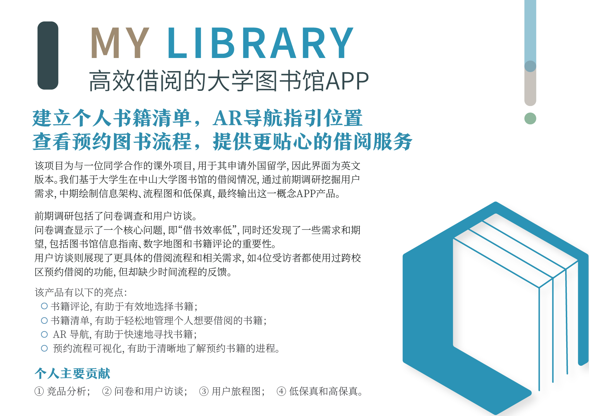

My Library
高效借阅的大学图书馆APP
项目简介
我们基于大学生在中山大学图书馆的借阅情况，通过前期调研挖掘用户需求，中期绘制信息架构、流程图和低保真，最终输出这一概念APP产品。
前期调研包括了问卷调查和用户访谈。问卷调查显示了一个核心问题，即“借书效率低”，同时还发现了一些需求和期望，包括图书馆信息指南、数字地图和书籍评论的重要性。用户访谈则展现了更具体的借阅流程和相关需求，如4位受访者都使用过跨校区预约借阅的功能，但却缺少时间流程的反馈。
为提供更贴心的借阅服务，输出产品的主要功能包括建立个人书籍清单、AR导航指引位置和查看预约图书流程。
该项目为课外的概念项目，完成于2018年11月7日。由于另一成员穆清用于其申请外国留学，因此界面为英文版本。
